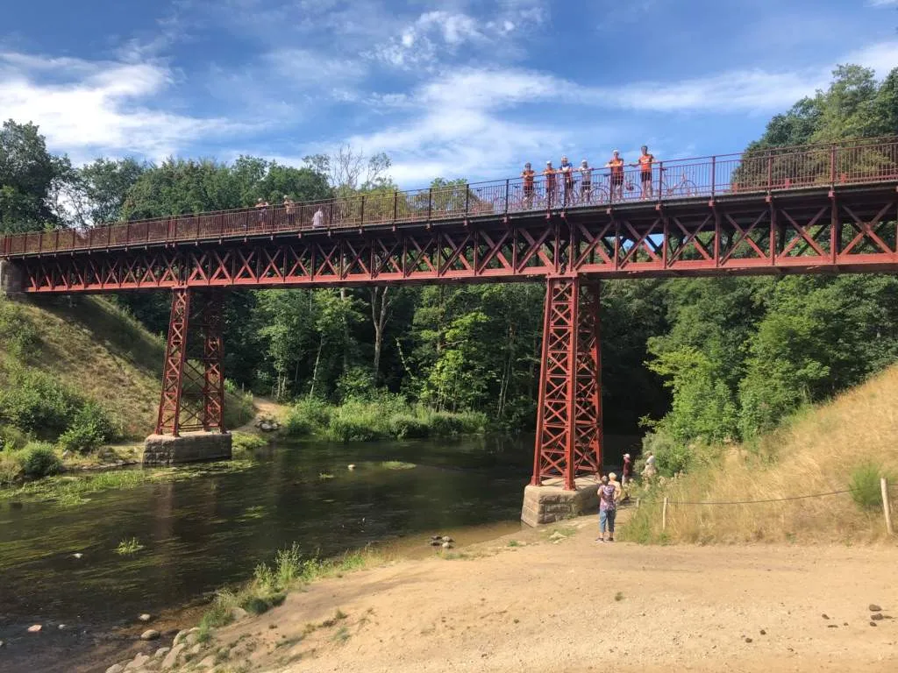
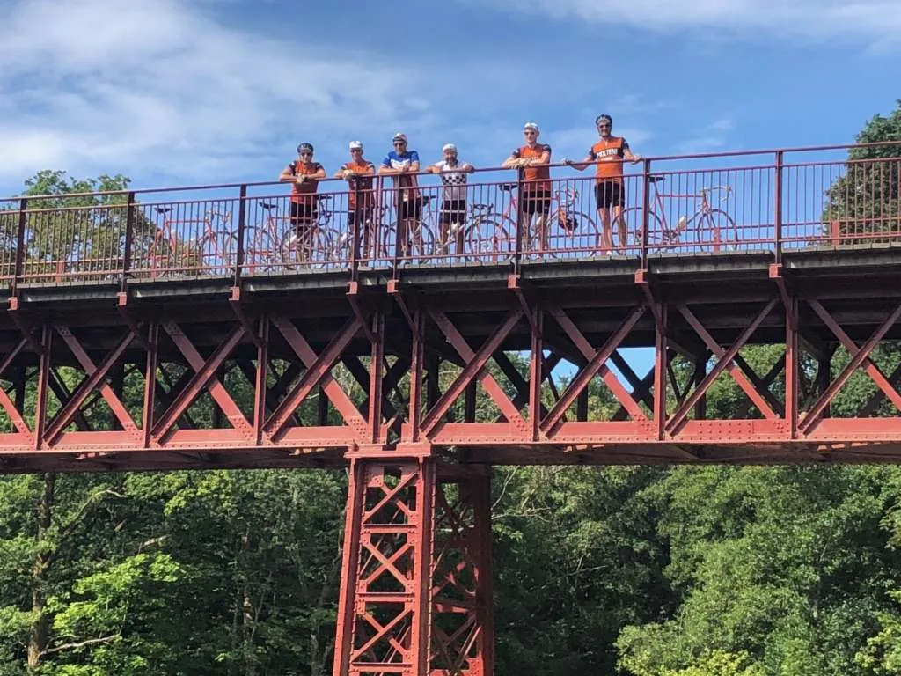
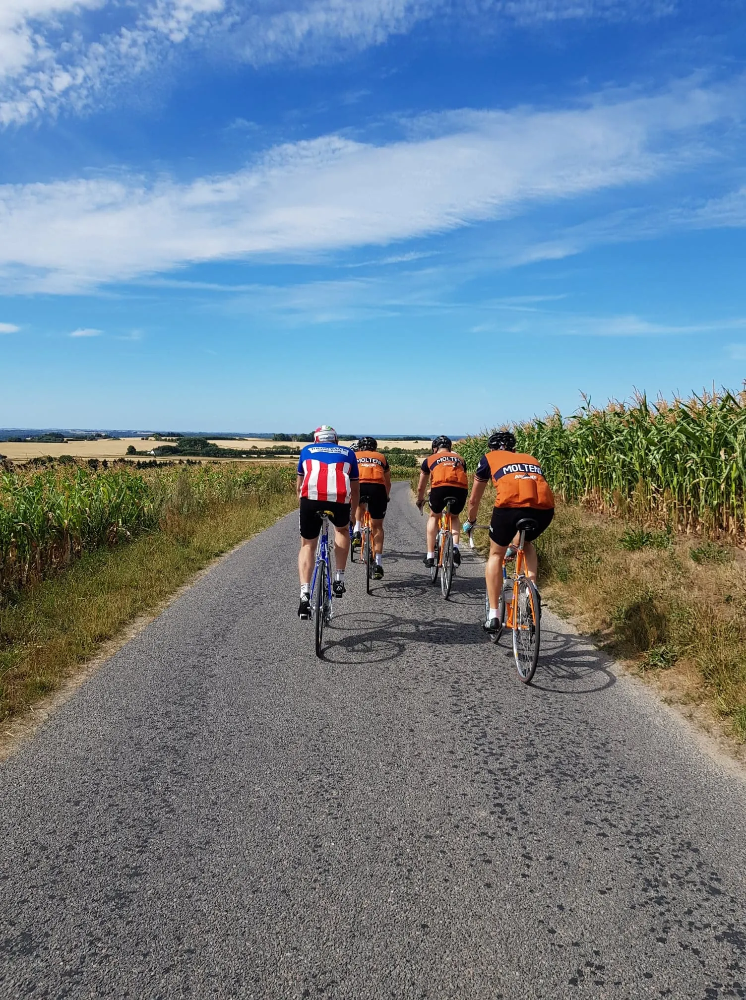
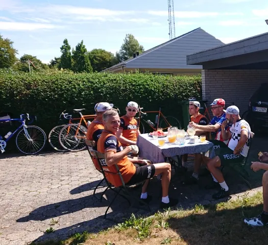

Træningssamling – Kongeetapen

Morgenespresso, De Vlaeminck & Zülle, Den Glemte Bro, falsk fladt i Massive Jyskehøjland og “lortebakker” i Vejle. Squadra Molteni og Peugeot Re-Cycled på tur til Kongeetapen.
På Squadra Molteni har vi flere gange kørt DCU’s Kongeetapen. Men i år gav det store logistiske udfordringer at stille til start i Viborg kl. 09.00. Derfor valgte vi at starte i Vejle kl. 09.00 – og køre nordpå ad små sogneveje til vi ramte Kongeetapens rute ved Gl. Rye – og så fortsætte de sidste 100 km af den mod målet i Vejle.

Efter morgenespresso i Molteni HQ gik turen gennem Vejle og retning nord. 5 km nord for Vejle møder vi De Vlaeminck & Zülle (Jens Ankerstjerne og søn), der kobler sig på turen. Jens er i sit bagland og kan nogle krøllede og små sogneveje hele vejen til Vestbirk, der også byder på et kort fotostop ved Den Glemte Bro.
 
Herefter fortsatte turen mod Gl. Rye, hvor vi ramte Kongeetapens rute med godt 100 km hjem til Vejle. Ruten bød på “Massive Jyskehøjland”, hvor det konstant er falsk fladt – og den store knold Yding Skovhøj, med den efterfølgende fantastiske udsigt over Jylland.



Sommerheden ramte hårdt, da vi igen var kommet ned fra “Massive Jyskehøjland”, men heldigvis bød Jens De Vlaeminck & Zülle på veldækket frugt- og saftbord i Uldum.


Efter doping med klassisk Citronmåne kørte vi videre mod Vejle. Kort for nedkørslen til Grejsdalen fik vi forstærkning af Maria Winther, det havde trodset lægens cykelforbud. Maria havde fået skåret en visdomstand ud og var blevet syet. Maria kørte fremragende på bakkerne i Vejle, hvor resten af holdet var ved at være mærket. “Det er kraftedme’ nogle lortebakker”, lød det adskillige gange fra Peugeot Morten.

Turen sluttede med legendariske Kiddesvej – og efterfølgende grillparty i Molteni HQ.


Forza Molteni